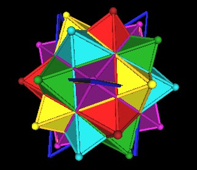

Here are the 5 Octahedra as they occur in the 120 Polyhedron.
|  |
| Pattern Knot and 5 Octahedra of the 120 Polyhedron. |
The Pattern Knot, using straight-edges, is in dark blue. The 8 vertices of this Pattern Knot do not all match exactly with Octahedra vertices. Four (4) are off just a little bit. (The "open angle" of the Pattern Knot is 30 degrees.)
Making adjustments so that all the knot's 8 vertices do match with 8 Octahedra vertices results in the following knot (brown).
| Pattern Knot (blue) and adjusted knot (brown). |
Another orientation....
| Pattern Knot (blue) and adjusted knot (brown). |
The answer is that this is indeed a knot with its edges weaving past each other, as opposed to the way the Pattern Knot (blue) has been drawn above with intersecting edges. But is this knot (brown) the Pattern Knot???
| Pattern Knot? |
Another orientation showing the edges passing by each other.
|
| Pattern Knot? |
Usage Note: My work is copyrighted. You may use my work but you may not include my work, or parts of it, in any for-profit project without my consent.